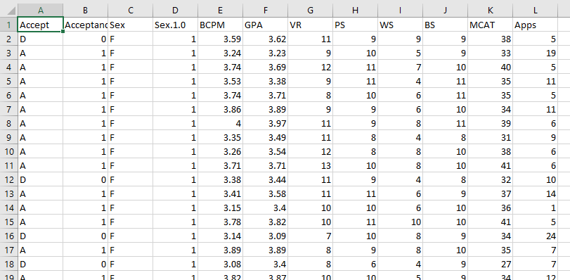

Research question
What is the probability of being accepted into medical school based off of MCAT and GPA?
first let's uplaod the data and look at the dataset.
library(ggplot2)
library(pROC)
medical <- read.csv(file = 'med.csv', header=T, sep=',')

Download medical dataset
Our research question states that our dependent variable is categorical and binary in nature, representing the acceptance into medical school (yes/no). Using logistic regression is the best approach when looking to model the probability of an event occuring with categroical outcomes.
Let's fit a logistic regression model for predicting the probability of being accepted into medical school from the variables MCAT and GPA. We will store the model object as a variable medical.model.
medical.model<- glm(Acceptance ~ MCAT+GPA, data = medical,
family = binomial)
Let's now setup the logistic regression equation for predicting the probability of acceptance from MCAT and GPA.
logit value = intercept + coefficient_of_MCAT * MCAT + coefficient_of_GPA * GPA
Using 'summary(medical.model)' we can find the coefficients and intercept values. Plugging them into our equation we now have.
logit value = -22.373 + 0.164 * MCAT + 4.68 * GPA
Above is the logit function it's the log odds of getting into medical school over the odds of not getting in.
probability of acceptance = exp(logit value) / (1 + exp(logit value))
We can then use this equation to convert the log odds into the probability of someone with the given MCAT and GPA of getting into medical school.
Let's Work Through an Example
What are the odds of being accepted into medical school with an MCAT score of 38 and a GPA of 3.54?
Set up the equation and solve for the log value:
log value = -22.373 + 0.164 * 38 + 4.68 * 3.54
log value = 0.426
Convert to probability:
p = exp(0.426) / (1 + exp(0.426))
Probability of acceptance = 0.605
You have a 60.5% chance of being accepted into medical school with an MCAT score of 38 and a GPA of 3.54.
If you're interested in seeing more problems I've solved, similar to this one, you can check out my kaggle profile: kaggle.com/blakeunderwood